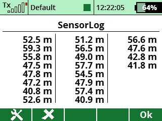

This app allows you to save sensor values to a table. You assign a switch to trigger when a value should be saved. As an example, a discuss launch pilot could have it save launch height measurements to help with practicing launch technique.
You can download the source code from the SoarJETI GitHub repository.